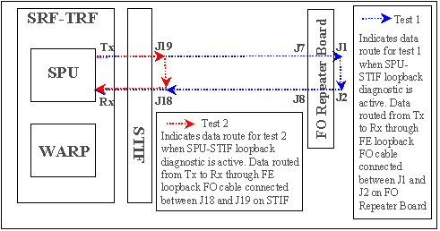

- 00000018WIA301C2E20GYZ
- id_131073523.0
- Aug 29, 2019 1:33:27 AM
SPU -> STIF DP
Diagnostic Link:
Diagnostics >> Peripherals >> Fiber Repeater Diagnostics
Purpose
This diagnostic tests the PAC fiber optic communication link from the STIF (MGD chassis) to the Fiber Optic (FO) Repeater Board. This test does not transmit any test data to the PAC and therefore does not verify communications beyond the FO Repeater Board.
This test includes two parts:
-
SPU -> Fiber Optic Repeater Board Loopback test (refer to as test 1)
-
SPU -> STIF Loopback test (refer to as test 2)
Test 2 is only needed if test 1 fails. Test 2 can further isolate the root cause of the failure.
Components Tested
-
SPU
-
STIF
-
FO Repeater Board
Requirements
Below list the procedures for test 1 and 2.
Test 1 requires an external loopback path between the J1 and J2 ports on the FO repeater board.
Test 2 requires an external loopback path between the J18 and J19 fiber optic ports on the STIF board (MGD chassis).
| Notice | |
|---|---|
For full details on the location of the Repeater Board or the jumper see Fiber Repeater Diagnostics.
-
Running Test 1At the FO Repeater Board remove the FO cable from connectors J1 and J2. Install the test FO loopback line (part number 46-28728G1, from the RF Cables kit that shipped with each system) between J1 and J2. See comments associated with the blue dotted line in Figure 1. Run the diagnostic. This tests the integrity of the TRF, the STIF, the path between the TRF and the STIF, the FO lines, and the FO Repeater Board. Remove the test FO loopback line, connect the product FO lines, and switch the jumper on the FO repeater board to the “A” position when the testing is finished.
-
Only if test 1 fails, then Remove the product FO line connector from J18 and J19 on the STIF board. Install the test FO loopback line (46-28728G1) between J18 and J19. See comments associated with the red dotted line in the illustration below. Run the diagnostic. This tests the integrity of the STIF board and the path between the SPU ( at the TRF board) and the STIF. Remove the test FO loopback line and connect the product FO lines when the testing is finished.
Block Diagram

Test Sequence
Test 1 cause the SPU on the TRF board to send serial data over the SPU-FO Repeater Board Loopback link denoted by the blue dotted lines in Illustration 1. Test 2 cause the SPU on the TRF board to send serial data over the SPU-STIF Loopback link denoted by the red dotted lines in Illustration 1. The loopback cable will return the data to STIF, which will return it to SPU.
Expected Results
Output values are judged pass or fail. In the event of failure, the details of the failure can be found in the GE System Log.
Although, in the case of errors you can click the 1st Error number to see the nature of the error, it is recommended that you view the GE System Log to view all the errors that were recorded.
If both tests fail, try running the PAC LED manual test (refer to the link below) to confirm that the PAC fiber optic cable driver on the STIF board is working. Also verify that your loopback fiber optic cable is not broken.
Finalization
TPS reset is required prior to scanning.
Etcetera
General fiber optic cable tips:
-
Verify that the fiber cables are fully seated in their sockets.
-
Verify that the cable is not kinked or pinched. Sharply bent plastic fibers block the light path.
-
Inspect the ends of the cables and verify that the plastic light conductors are even with the ends of the gray or blue connectors. The fiber cable may be partially pulled out of the connector leaving a gap in the light's path.
Click Calculate Time to get an estimate of the time it will take to run the selected diagnostics.